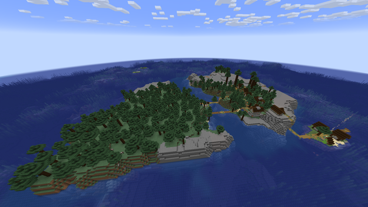
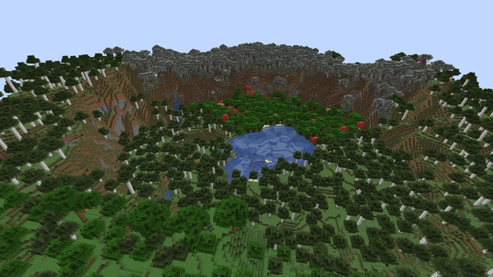

Зерна генерації
Зерно: 6942699783490145785
Java & Bedrock
*На Bedrock немає аванпоста.
Координати: 100 _ 50
Версія: 1.21.4

Зерно: 3444444432858
Java
Координати: -1024 _ -256
Версія: 1.18 - 1.21.4
*Селища відрізняються у різних версіях. На 1.21+ під островом палац випробувань.
